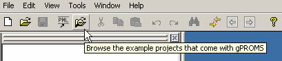

The Buffer Tank Model entity
The development of a basic gPROMS process model is explained by reference to the gPROMS Project Buffer Tank.gPJ that can be found in the installation.You can access this by clicking on the Browse Examples button on the gPROMS Toolbar and then navigating to "General capabilities\Other examples\Buffer Tank.gPJ".

An illustrative buffer tank example is used to demonstrate the following:
the gPROMS language to enter Model Equations
how to declare the Parameters and Variables that appear in these Equations
how to specify the values of Model Variables to satisfy the degrees of freedom
how to provide initial values for the state (differential) Variables
Note: to create your own Model and Process Entites; select New entity....from the Entity menu - choosing Model or Process as the Entity type (see also: Entities).